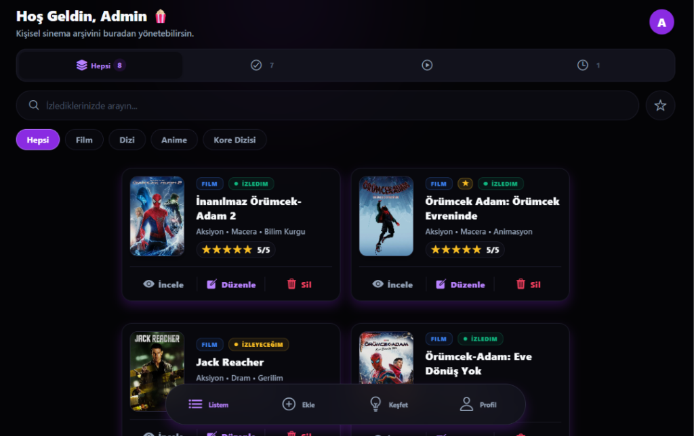

Kişisel Arşiv ve Takip: Film ve dizilerini kolayca listele, izleme durumlarını yönet ve
kendi dijital kütüphaneni oluştur.
Admin ile İletişim: Kullanıcıların sistem üzerinden doğrudan admin ile bağlantı
kurabildiği, öneri ve geri bildirimlerini iletebildiği etkileşimli yapı.
Modern Arayüz: Sade, şık ve kullanıcı deneyimini ön planda tutan tasarımıyla akıcı bir
kullanım deneyimi sunar.